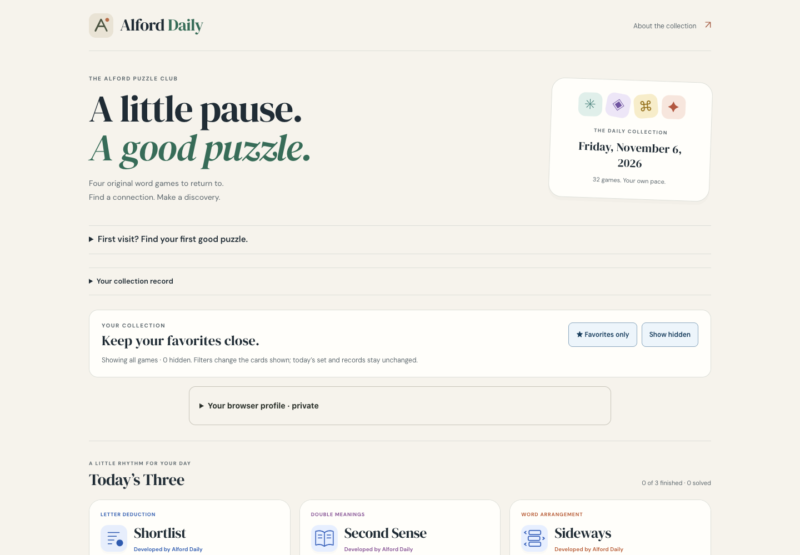

Compare with the current home page
The same paper background, charcoal text, green accents and fonts apply to every option below.

Opus’s review of this game
Open a concept to inspect the desktop or phone layout. These are visual prototypes, with sample states and limited controls. Choices for this round are saved only in this browser.